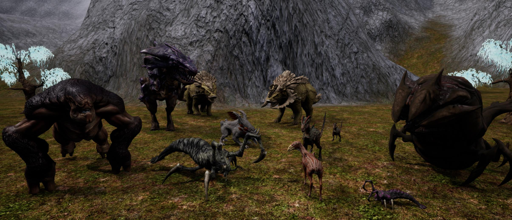

List of creatures
The following is a list of some of the creatures in GearStorm. Apollyfawn (Deer) - Apollyon's most abundant herbivore. It is a common food source for most carnivores and omnivores. Rhinolope - A more aggressive and capable herbivore. Typically not combative unless threatened. Scorpax - An athropod like creature that is highly aggressive and territorial. A good source of protein. Raptrax - A highly armored raptor-like predator. They travel in packs and are aggressive when hungry. Tyrax - Apollyon's alpha predator. A Tyrannosaurs like creature that is heavily armored and lethal. Sandwyrm - Another massive predator that lives under the sands in the desert. This creature can also spray a mist of acid to incapacitate its prey. Phage - There are several stages of infected humans known as the phage.